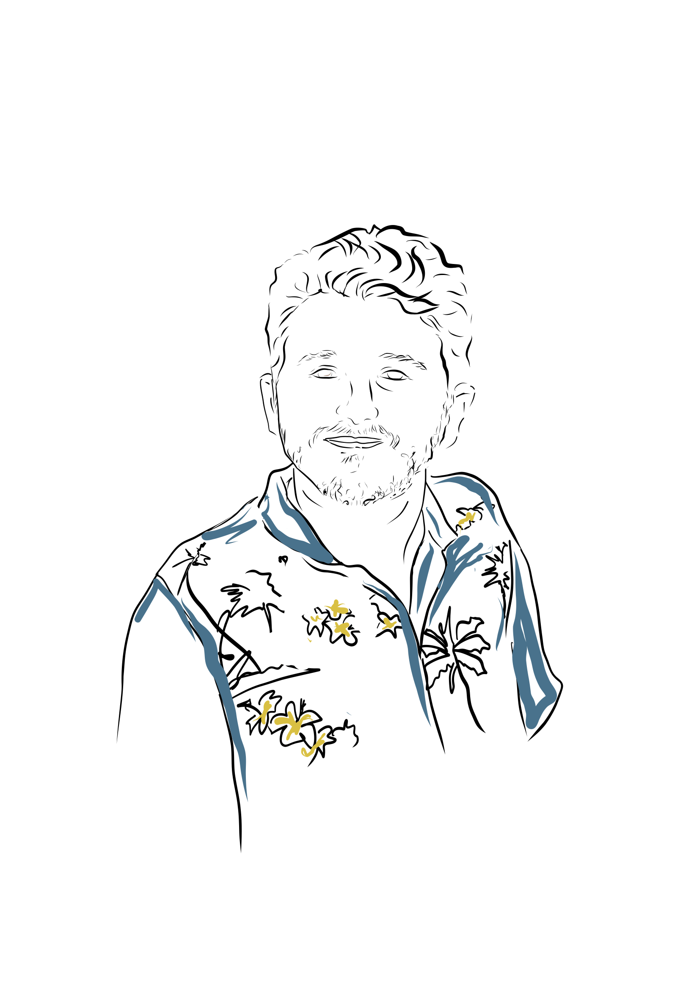
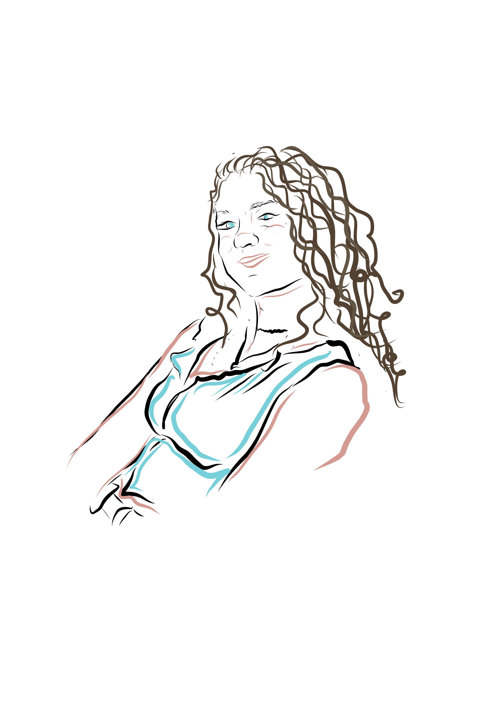
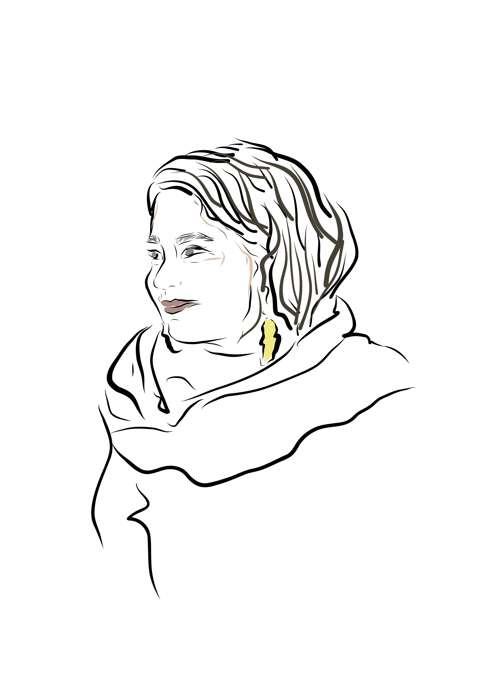
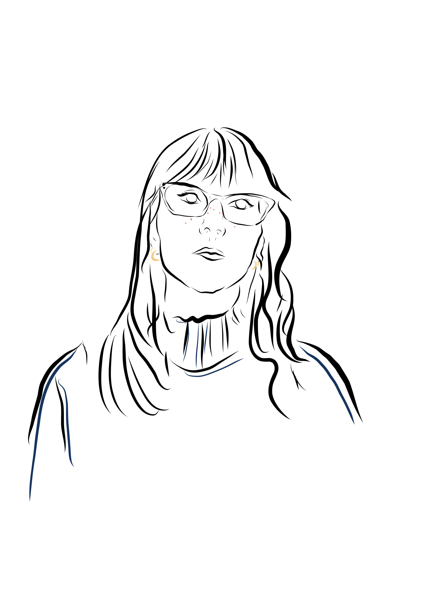

Mapping Joseph Campbell’s monomyth as a computable knowledge structure,
from ancient epics to modern cinema.
In 1949, Joseph Campbell published The Hero with a Thousand Faces, a work of comparative mythology arguing that heroic myths across cultures, from Sumerian descents to Promethean cycles, betray a single generative sequence he termed the monomyth: a departure, an initiation, and a return, each threshold marking a transformation in the hero's ontological status.
Campbell's framework was shaped decisively by Carl Jung's theory of archetypes, which posited recurring mythological figures as expressions of a collective unconscious transcending individual experience. Campbell gave this psychological machinery a narratological armature, mapping psychic individuation onto the plane of story, a map contemporary filmmakers and game designers still reach for, whether consciously or through convergent intuition.
What makes the monomyth compelling as an object of formal study is the tension between its claim to universality and the irreducible particularity of any given narrative. Every story read through Campbell's stages also resists that reading at determinate points, producing divergences and inversions that constitute the most analytically productive sites of inquiry. It is this generative friction, the gap between the structural template and its concrete realization, that invites a rigorous, systematic treatment capable of capturing both the pattern and its deformations.
“The hero ventures forth from the world of common day into a region of supernatural wonder: fabulous forces are there encountered and a decisive victory is won: the hero comes back from this mysterious adventure with the power to bestow boons on his fellow man.” — Joseph Campbell, The Hero with a Thousand Faces (1949)
The ontology defines a reusable vocabulary at monomyth: that captures the deep structure of
Campbell's monomyth. Expressed in OWL and serialized as Turtle, it models the seventeen stages across
three acts, the archetypal roles that populate the journey, and the evaluative apparatus needed to assess
how faithfully (or how creatively) any given narrative instantiates the pattern. Every analytical
judgment, from the quality of a stage's manifestation to the rationale behind a departure from the
template, is represented as a first-class, queryable entity rather than a background assumption.
The central modeling pattern is the MonomythExpression, a reification of the interpretive act itself: the structured reading of a particular narrative work through Campbell's lens. Each expression anchors a constellation of StageRealizations, the concrete manifestations of abstract stages within that narrative. A realization carries a prose description of the narrative moment it captures, a position in the story's own sequence (which may diverge from the canonical ordering), and a FitQuality assessment on a six-point scale ranging from Perfect Fit through Strong, Moderate, and Weak to Absent and Inverted, each backed by a numeric score and an optional analytical note.
The treatment of characters draws on Christopher Vogler's The Writer's Journey,
a screenwriting manual that deliberately translates Campbell's mythological archetypes into a practical
dramaturgy of recurring roles. The ontology formalizes it through the embodiesArchetype property, linking characters
to archetypal roles while acknowledging their productive instability: a figure who
operates as Mentor in one stage may reveal itself as Shadow in another, and the graph preserves this
fluidity as structured, traversable data.
Where the alignment between a narrative and the monomyth template is imperfect, the ontology does not
simply record the gap: it models the nature of the departure through three orthogonal divergence classes,
all subclasses of CREON's ProductDivergence.
A NarrativeDivergence captures what happens when a stage is absent, subverted,
compressed, or redistributed across multiple narrative moments. A SequentialDivergence
marks when a stage occurs and whether the narrative has displaced it from its canonical position for
dramatic or thematic effect. A SemioticDivergence traces how the stage is expressed,
underlying the shift in sign systems (from sacred to secular, from mythic to technological, from external
threat to internal state) through which the same structural function is realized in a different cultural
or medial vocabulary. Each divergence carries a prose rationale documenting the artistic purpose behind
the departure, making explicit that imperfect fit is itself an object of analysis, often the most
revealing one.
Formalizing a hermeneutic tradition into computational structure risks flattening the very interpretive richness it seeks to preserve. This ontology addresses this tension by treating deviation as constitutive: conformity and subversion, presence and absence, canonical order and displacement are granted equal analytical weight. The deeper question it encodes is how a pattern largely unchanged for millennia has generated such radically diverse stories, and how each creative departure, every inversion or omission, is itself a meaningful act.
The monomyth functions not as a prescriptive template, but as a structural baseline across diverse narrative histories. While certain works align strictly with this framework, others derive their aesthetic or narrative efficacy through deliberate divergence from the expected archetype.
Formalizing Campbell’s framework in OWL bridges literary analysis and computational semantics, establishing a model for the computable humanities. This approach preserves narrative complexity while enabling systematic, scalable comparison. Consequently, the resulting knowledge graphs act as analytical instruments, formalizing how specific cultural and authorial contexts navigate the underlying mechanics of departure, ordeal, and return.
However, the instantiation of these knowledge graphs also highlighted the inherent subjectivity of structural mapping. During the peer-review phase, it became evident that aligning a narrative to a formalized framework is not a purely mechanical extraction. Because researchers evaluate source material through differing critical and analytical paradigms, defining a structural fit constitutes an active, interpretive appraisal of the text.
This interpretive variance manifested directly in the execution of the ontology’s technical architecture. For example, to
formalize a missing stage, some researchers consistently paired a monomyth:AbsentFit with an explicit monomyth:NarrativeDivergence,
while others treated the AbsentFit itself as a functionally complete ontological statement. Similarly, when a singular
thematic subversion impacted multiple stages, certain modelers mapped a single divergence node to several stages,
whereas others instantiated distinct divergences or omitted redundant links. Ultimately, these methodological deviations
underscore a fundamental characteristic of semantic modeling in the humanities: while an ontology provides a rigorous,
standardized schema, the resulting semantic data inherently encodes the critical choices of the human annotator.
Although our Monomyth ontology doesn't explicitly reuse creon:MetaConvergence, it
inherently executes its core mechanism. CreOn defines meta-convergence as the critical appraisal of
a creative product's divergence against expected background knowledge to make it functionally or
aesthetically effective. Our framework performs this function by using Campbell's monomyth as the
structural baseline, while applying specific divergence classes
(monomyth:NarrativeDivergence, monomyth:SequentialDivergence, and
monomyth:SemioticDivergence) to evaluate creative departures. Both models view these
deviations as deliberate, meaningful choices rather than simple errors. To formally implement this
connection in the future, we could map our monomyth:FitQuality scores and
monomyth:divergenceRationale descriptions directly to the
creon:MetaConvergence class.
The ultimate extensibility of this project lies in the potential to expand our foundational schema to transcend the structural limitations of Joseph Campbell's original model. By integrating frameworks like Maureen Murdock's The Heroine's Journey and Kim Hudson's The Virgin's Promise into our ontology.ttl, we could broaden the graph's analytical power to capture deeply internal, relational, and socially disruptive narrative arcs. While Campbell's monomyth maps an outward quest of conquest into the unknown, encoding these alternative frameworks would allow us to query entirely different narrative. Murdock provides a potential "feminine counter-arc" that tracks inward descent to integrate split psychic polarities, while Hudson's model captures transformation born from radical self-expression against a conformist community. Ultimately, by formalizing these alternative structures as linked data in the future, we could empower the ontology to successfully process genres that the traditional monomyth struggles with, proving that narratives prioritizing authenticity and inner balance are just as structurally rigorous as tales of external triumph.
By populating the knowledge graphs with diverse narrative in the future, would enable us to formulate complex research questions that query divergences across multiple cultural axes.
We could run SPARQL queries to discover, for instance, how the
monomyth:SemioticDivergence shifts from literal magic to psychological trauma across
centuries of storytelling, or whether authors of different genders systematically invert specific
archetypes. Specifically, the structured nature of this dataset would allow researchers to track
narrative shifts over time (mapping historical trends and the evolution of specific
divergences), across space (contrasting Western and Eastern structural traditions),
through distinct media (comparing structural constraints in literature, film, comics,
and music), and across gender (analyzing how the gender of the author or protagonist
dictates specific divergences).
Ultimately, this framework has the potential to transition the Monomyth from a static literary theory into a dynamic, quantitative research tool, ready to reveal exactly how modern culture bends ancient mythologies to reflect its own realities.
To rapidly scale the population of our ontology without sacrificing structural integrity, we employed an LLM-assisted knowledge grounding technique using Claude and Gemini. By supplying our baseline OWL ontology alongside a "gold-standard" exemplar (The Matrix), we created a short prompt to draft new narrative knowledge graphs.
The results provided a fascinating case study in LLM limitations. For newer or less famous works, analytical accuracy plummeted as the models confidently hallucinated plot points to force a fit into Campbell's framework.
Ultimately, LLM generation serves as a first-pass scaffolding, requiring human-in-the-loop revision. The AI can build the graph's syntactic skeleton, but identifying why an author deliberately subverted an archetype remains a human intellectual exercise.

monomyth:NarrativeWork: The Matrix, The Call of the Wild, The Lion King, Aeneid.

monomyth:NarrativeWork: Oedipus,
Lady Bird, Orlando Furioso.

monomyth:NarrativeWork: The Rostam and
Haft-Khan, The Secret Life of Walter Mitty.
monomyth:NarrativeWork: Batman: Year
One, Sable Fable